旧版と改稿候補。同じシード・手札・報酬・画面寸法で比較。全素材は未採用候補。
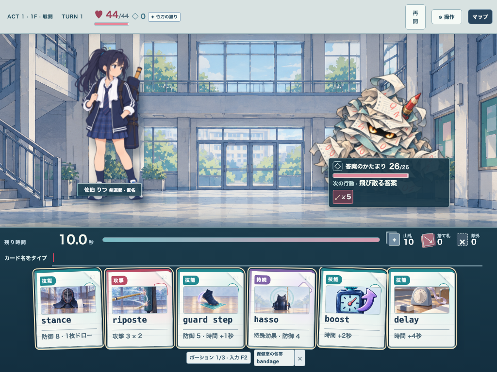
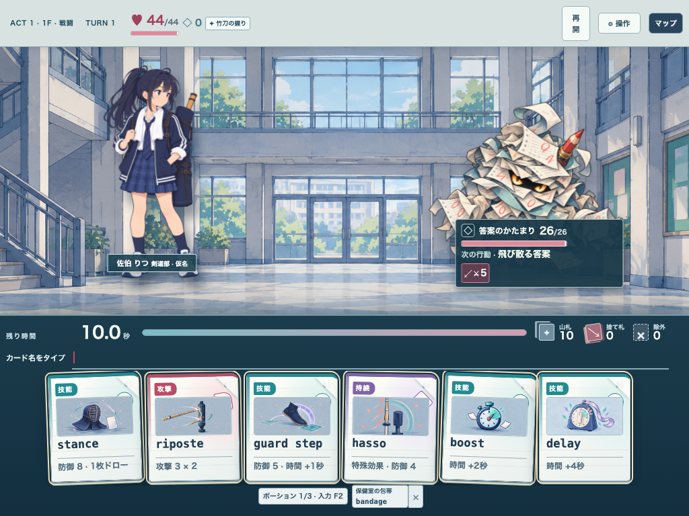
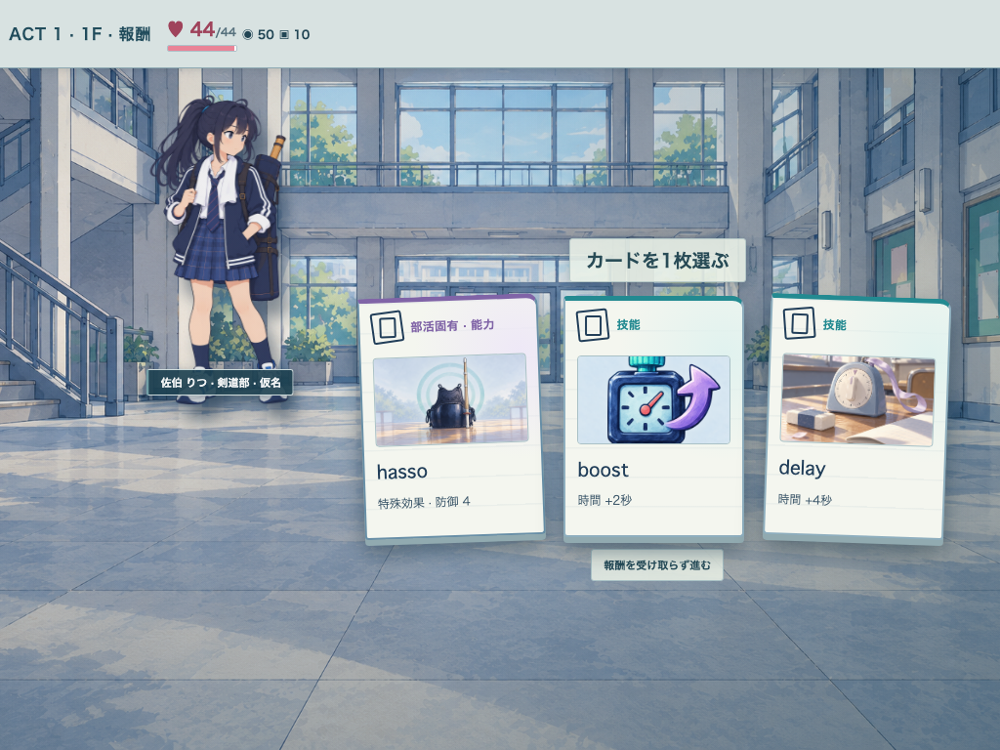
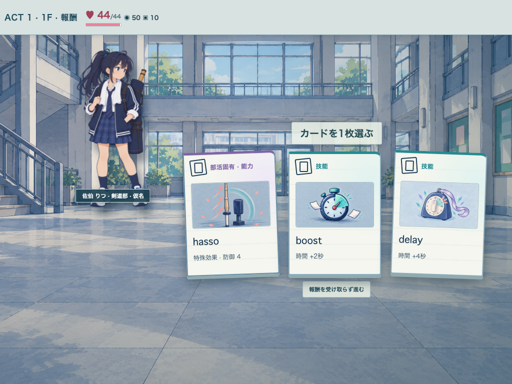
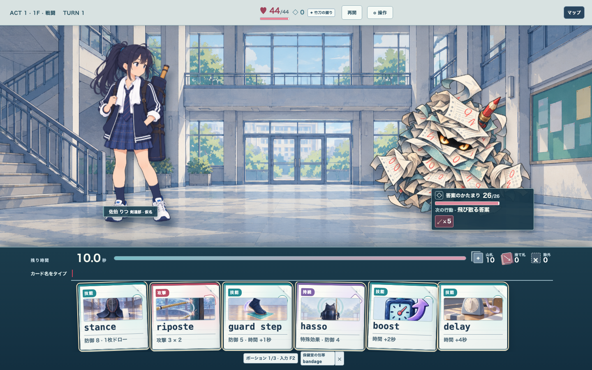
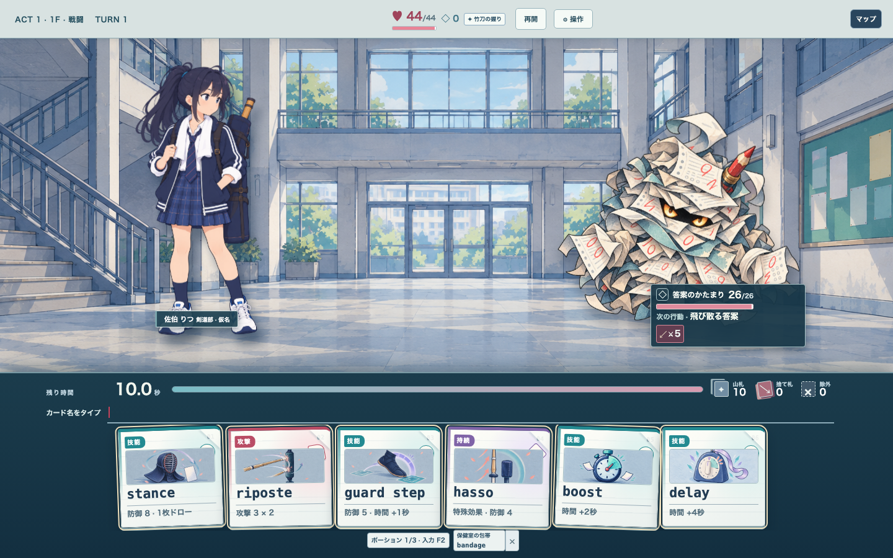
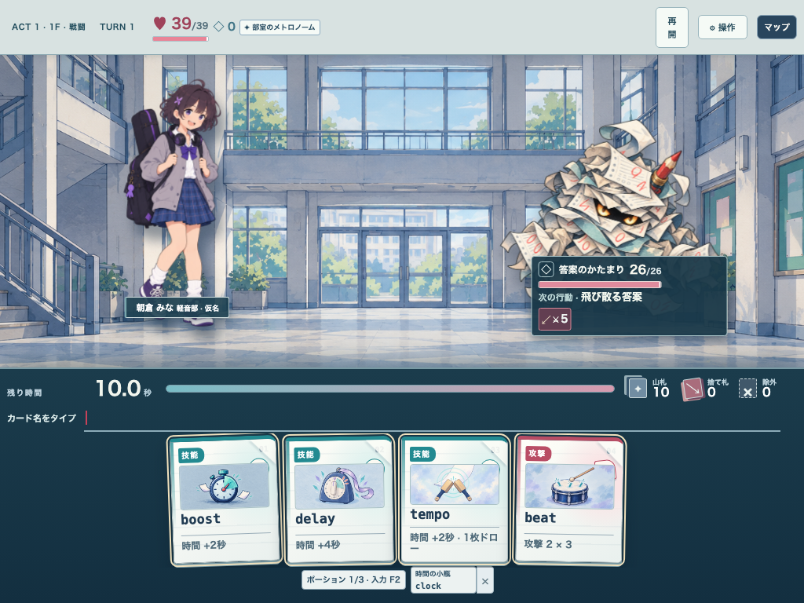
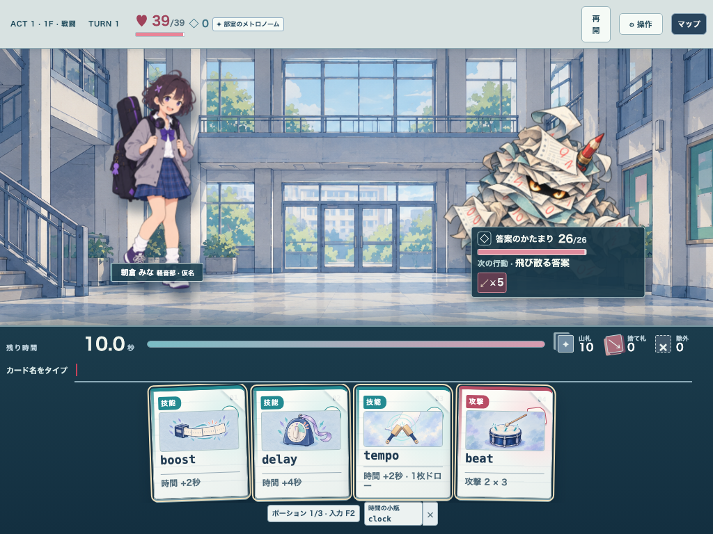
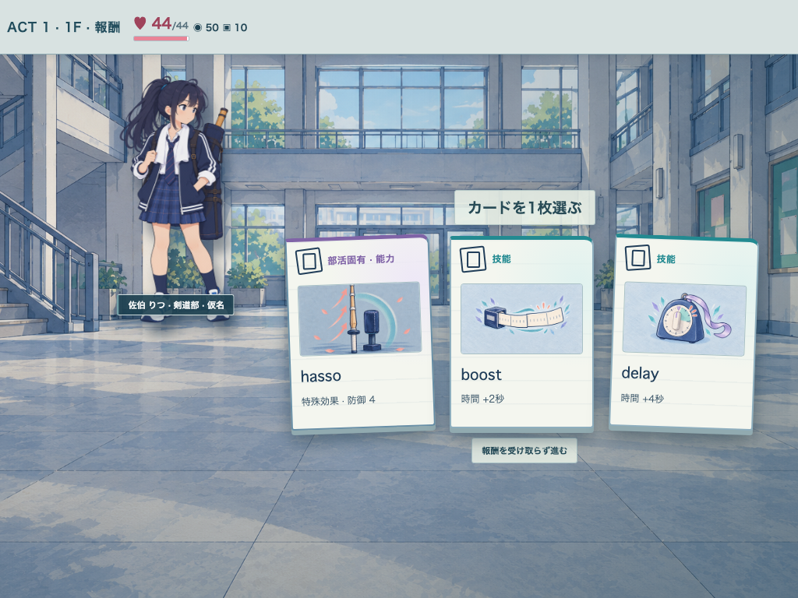
#327 Draft PR #337は別シード・別敵・仮の取得頻度表示を含むため、直接の前後差分ではない。旧4点が剣道部の初期手札で並ぶ参照として使用する。
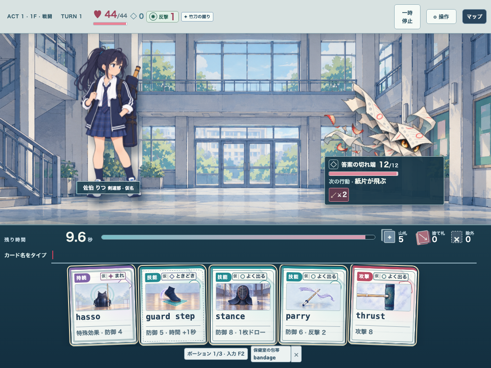
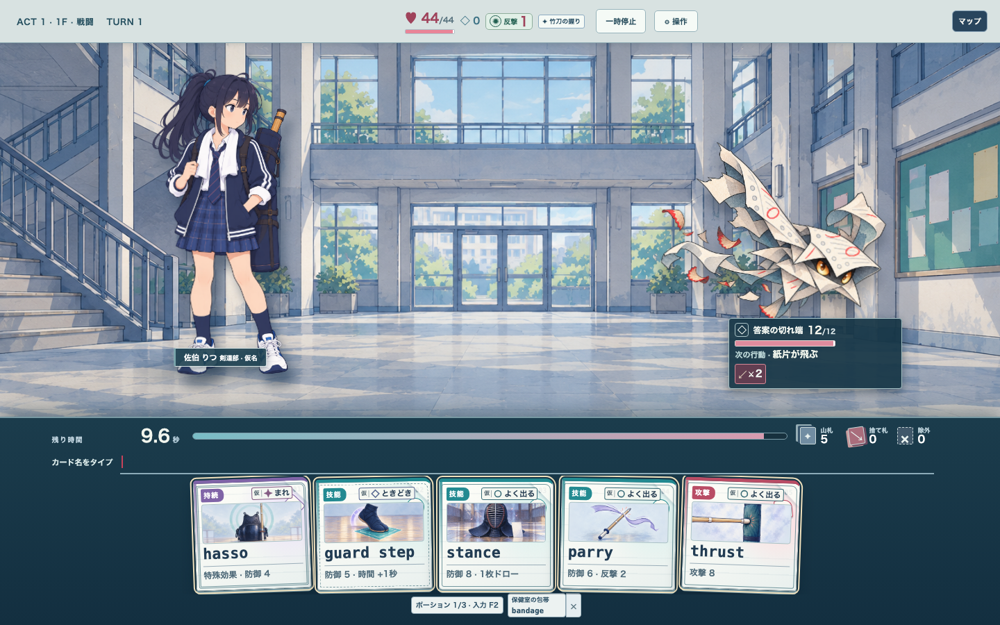
boost/delay は各部活の初期絵と並べ、手札・報酬を1024/1440の両幅で自動検査した。ファイル名は {literature,science,kendo,music,art}-{1024,1440}-{hand,reward}-{before,after,v4}.png。報酬は剣道のみ2組。v4でも正式採用はしていない。
{literature,science,kendo,music,art}-{1024,1440}-{hand,reward}-{before,after,v4}.png